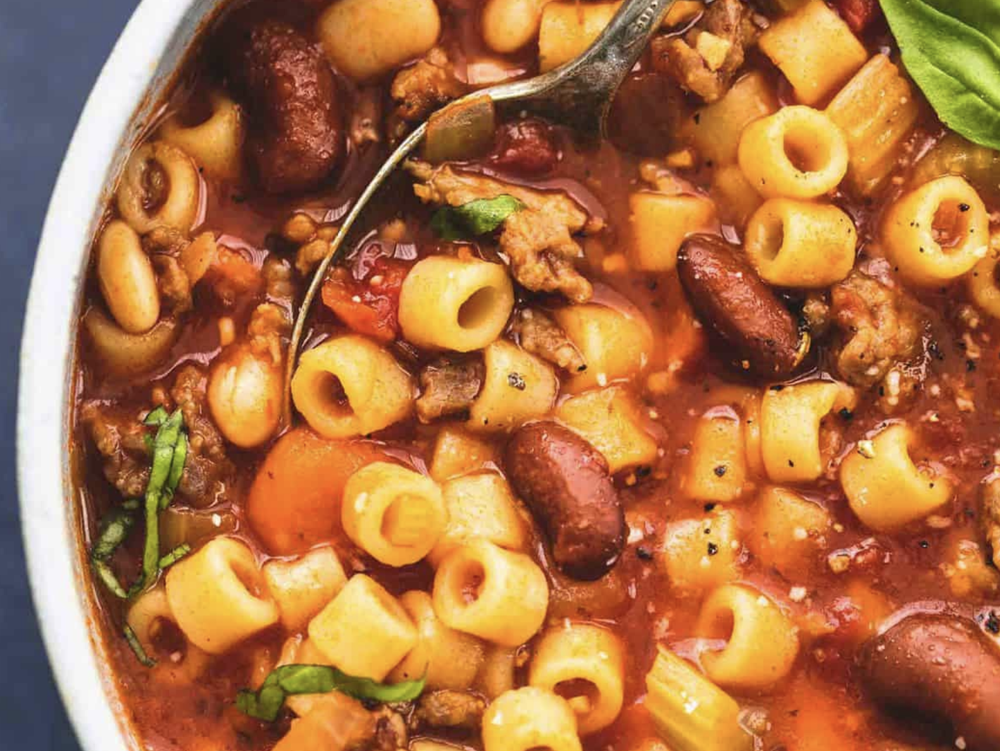

Pasta E Fagioli

Description
My mom used to make this pasta all the time growing up. We'd have it in different ways depending on what cans were
left in the pantry at any given time. It's incredibly flexible and always comforting. A day does not
go by where my pantry lacks any of the below ingredients.
Ingredients
- 1 (28-ounce) can whole tomatoes packed in juice
- 2 tablespoons extra-virgin olive oil, plus more for serving
- 1 tablespoon butter
- 3 ounces pancetta or bacon, finely chopped (optional)
- 1 medium onion, finely diced (about 1 cup)
- 6 cloves garlic, minced on a microplane grater
- 1/2 teaspoon dried oregano
- 1/2 teaspoon dried red pepper flakes
- 1 quart homemade or low-sodium canned chicken broth
- 2 (15 ounce) cans dark kidney beans
- 2 bay leaves
- 1 cup small pasta such as shells, ditali, or elbows
- Kosher salt and freshly ground black pepper
- 2 tablespoons chopped fresh parsley
Steps
- Pour the tomatoes into a medium bowl and using hands, squeeze each tomato through your fingers to break it up into small pieces (be careful, they can squirt). Set aside.
- Heat olive oil and butter in a large saucepan over medium-high heat until butter is melted. If using pancetta, add to pan and cook, stirring constantly until fragrant, about 2 minutes. Reduce heat to medium and add onion, garlic, oregano, and red pepper flakes. Cook, stirring constantly until fragrant and softened but not browned, about 3 minutes. Add tomatoes and their juice, chicken broth, kidney beans, and bay leaves. Bring to a boil over high heat then reduce to a bare simmer. Cook for 20 minutes, adding pasta to soup for the last 5 to 10 minutes (depending on the package directions). Season to taste with salt and pepper. Discard bay leaves, stir in parsley and serve, drizzling each serving with extra-virgin olive oil at the table.